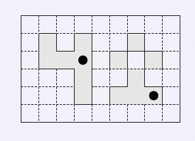

第一行是两个数m,n(1<=m，n<=1000). 以下m行，每行n个数，其绝对值表示相应格子的海拔高度；若该数为正
，表示他是AKD市的一个区域；否则就不是。请大家注意:所有格子的海拔高度其绝对值不超过1000,且可以为零.
AKD市处在一个四面环山的谷地里。最近一场大暴雨引发了洪水，AKD市全被水淹没了。Blue Mary，AKD市的市
长，召集了他的所有顾问（包括你）参加一个紧急会议。经过细致的商议之后，会议决定，调集若干巨型抽水机，
将它们放在某些被水淹的区域，而后抽干洪水。你手头有一张AKD市的地图。这张地图是边长为m*n的矩形，被划分
为m*n个1*1的小正方形。对于每个小正方形，地图上已经标注了它的海拔高度以及它是否是AKD市的一个组成部分
。地图上的所有部分都被水淹没了。并且，由于这张地图描绘的地面周围都被高山所环绕，洪水不可能自动向外排
出。显然，我们没有必要抽干那些非AKD市的区域。每个巨型抽水机可以被放在任何一个1*1正方形上。这些巨型抽
水机将持续地抽水直到这个正方形区域里的水被彻底抽干为止。当然，由连通器原理，所有能向这个格子溢水的格
子要么被抽干，要么水位被降低。每个格子能够向相邻的格子溢水，“相邻的”是指（在同一高度水平面上的射影
）有公共边。
第一行是两个数m,n(1<=m，n<=1000). 以下m行，每行n个数，其绝对值表示相应格子的海拔高度；若该数为正
，表示他是AKD市的一个区域；否则就不是。请大家注意:所有格子的海拔高度其绝对值不超过1000,且可以为零.
只有一行，包含一个整数，表示至少需要放置的巨型抽水机数目。
6 9
-2 -2 -1 -1 -2 -2 -2 -12 -3
-2 1 -1 2 -8 -12 2 -12 -12
-5 3 1 1 -12 4 -6 2 -2
-5 -2 -2 2 -12 -3 4 -3 -1
-5 -6 -2 2 -12 5 6 2 -1
-4 -8 -8 -10 -12 -8 -6 -6 -4
2